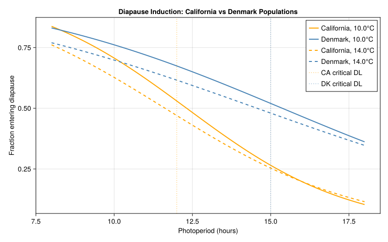
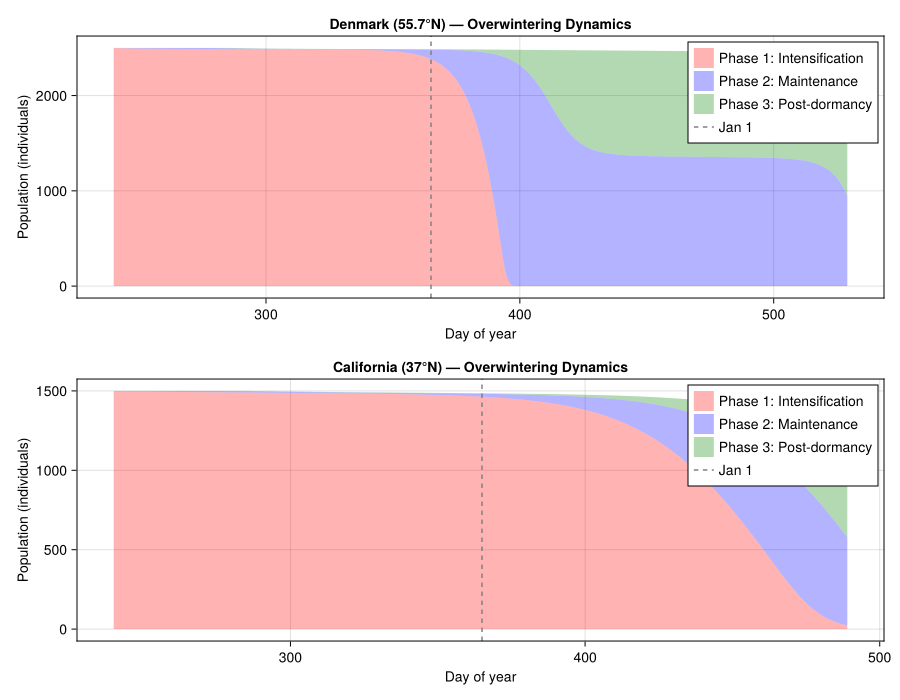
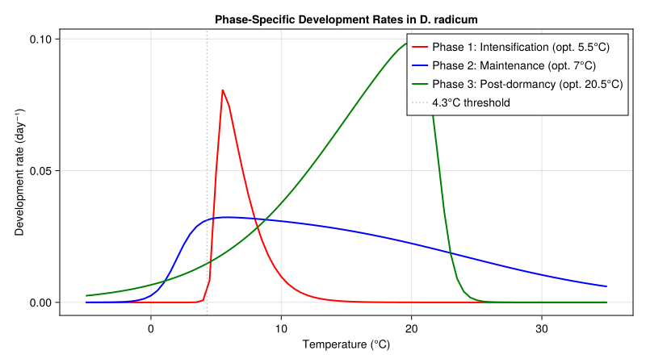
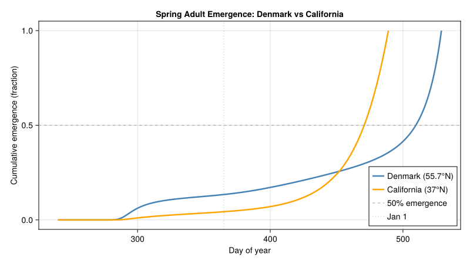

Cabbage Root Fly Diapause Dynamics
Simon Frost
- Background
- Fermi–Dirac Development Rate Model
- Phase-Specific Development Rate Functions
- Photoperiod-Driven Diapause Induction
- Seasonal Photoperiod at Different Latitudes
- Overwintering Population Model — Denmark
- Simulating Denmark Overwintering
- Simulating California Overwintering
- Comparing Emergence Patterns
- Validation: Field Emergence Data
- Diapause Fraction vs Photoperiod
- Seasonal Emergence Pattern
- Development Rate Curves
- Cumulative Emergence Comparison
- Key Insights
- Parameter Sources
- References
Primary reference: (Johnsen et al. 1997).
Background
The cabbage root fly (Delia radicum L.) is one of the most destructive pests of brassica crops (cabbage, broccoli, cauliflower, oilseed rape) in temperate regions worldwide. Larvae feed on roots, causing wilting, stunting, and plant death. Effective management depends on predicting spring adult emergence from overwintering pupae.
D. radicum overwinters as dormant pupae in the soil. Diapause is induced in larvae by short photoperiods and low temperatures. The overwintering process has three physiological phases, each with a distinct temperature response:
- Phase 1 — Diapause intensification: Development is slowed at autumn temperatures (10–15 °C). The optimum is at a low 5.5 °C, ensuring that warm autumn conditions do not complete the phase prematurely.
- Phase 2 — Diapause maintenance/termination: The classic “chilling” phase. Optimum development occurs around 5–7 °C. This phase proceeds through winter cold.
- Phase 3 — Post-dormancy: Metamorphosis and adult emergence, driven by spring warming. The lower developmental threshold is 4.3 °C and 50 % of adults emerge after ~150 degree-days above 4.3 °C. Development is inhibited above ~22 °C.
Geographic contrast: In Denmark (55.7 °N), all pupae found in the field by late August are dormant, and adults do not emerge until spring. In coastal northern California (~37 °N), the climate is mild enough that a fraction of the population remains active year-round, and diapause is induced at shorter critical photoperiods than in northern European populations.
References:
- Johnsen, S., Gutierrez, A.P. & Jørgensen, J. (1997). Overwintering in the cabbage root fly Delia radicum: a dynamic model of temperature-dependent dormancy and post-dormancy development. Journal of Applied Ecology 34, 21–28.
- Johnsen, S. & Gutierrez, A.P. (1997). Induction and termination of winter diapause in a Californian strain of the cabbage maggot (Diptera: Anthomyiidae). Environmental Entomology 26, 84–90.
Fermi–Dirac Development Rate Model
Johnsen et al. (1997) used a modified Fermi–Dirac distribution to model the temperature-dependent rate of development in each phase. The function has an asymmetric, bell-shaped response:
\[R_j(T) = \frac{R_{\max}}{(1 + \exp((T - x_1)/f_1))(1 + \exp((x_2 - T)/f_2))}\]
where $R_{\max}$ is the maximum rate, $x_1$ and $x_2$ set the upper and lower inflection temperatures, and $f_1$ and $f_2$ control the steepness of decline. Each phase has different parameters, reflecting distinct enzyme-kinetic rate-limiting steps (Sharpe & DeMichele 1977).
using PhysiologicallyBasedDemographicModels
import PhysiologicallyBasedDemographicModels: development_rate
"""
FermiDiracDevelopmentRate(R_max, x1, x2, f1, f2)
Modified Fermi–Dirac development rate (Olson, Sharpe & Wu 1985).
Used by Johnsen et al. (1997) for *Delia radicum* dormancy phases.
R(T) = R_max / ((1 + exp((T - x1)/f1)) * (1 + exp((x2 - T)/f2)))
"""
struct FermiDiracDevelopmentRate{T<:Real} <: AbstractDevelopmentRate
R_max::T
x1::T # upper inflection temperature
x2::T # lower inflection temperature
f1::T # upper steepness
f2::T # lower steepness
end
function development_rate(m::FermiDiracDevelopmentRate, T::Real)
denom = (1 + exp((T - m.x1) / m.f1)) * (1 + exp((m.x2 - T) / m.f2))
return m.R_max / denom
enddevelopment_rate (generic function with 4 methods)Phase-Specific Development Rate Functions
The three phases have qualitatively different thermal optima:
- Phase 1 peaks at ~5.5 °C (autumn: slows development at field temps)
- Phase 2 peaks at ~7.0 °C (winter: chilling requirement)
- Phase 3 peaks at ~20.5 °C (spring: standard pupal development)
Parameters were deduced by iteratively fitting the distributed-delay dynamics model to emergence data from six cohorts of field-collected dormant pupae in Denmark (Johnsen et al. 1997, Table 1).
# ──────────────────────────────────────────────────────────────────────────────
# Fermi–Dirac parameters from Johnsen et al. (1997), Table 1.
#
# Paper convention: R(T) = Rm / ((1+exp((x₁−T)/σ₁))·(1+exp((T−x₂)/σ₂)))
# x₁ = lower inflection, x₂ = upper inflection.
# Code convention: R(T) = Rmax / ((1+exp((T−x1)/f1))·(1+exp((x2−T)/f2)))
# x1 = upper inflection, x2 = lower inflection.
# Mapping: paper x₁→code x2, paper x₂→code x1,
# paper σ₁→code f2, paper σ₂→code f1.
# ──────────────────────────────────────────────────────────────────────────────
# Phase 1: Diapause intensification (optimum 5.5 °C)
# Table 1: Rm=0.15, x₁=5, x₂=6, σ₁=0.2, σ₂=1.5, k=25
const phase1_dev = FermiDiracDevelopmentRate(0.15, 6.0, 5.0, 1.5, 0.2)
# Phase 2: Diapause maintenance / termination (optimum ~7 °C)
# Table 1: Rm=0.035, x₁=2, x₂=24, σ₁=0.8, σ₂=7, k=44
const phase2_dev = FermiDiracDevelopmentRate(0.035, 24.0, 2.0, 7.0, 0.8)
# Phase 3: Post-dormancy / metamorphosis (optimum ~20.5 °C)
# Table 1: Rm=0.14, x₁=15, x₂=22, σ₁=5, σ₂=0.6, k=25
const phase3_dev = FermiDiracDevelopmentRate(0.14, 22.0, 15.0, 0.6, 5.0)
# Compare development rates across temperatures
println("Temperature-dependent development rates by phase:")
println("="^65)
println("T (°C) | Phase 1 (intens.) | Phase 2 (maint.) | Phase 3 (post-dorm.)")
println("-"^65)
for T in [-5.0, 0.0, 3.0, 5.0, 7.0, 10.0, 15.0, 20.0, 25.0, 30.0]
r1 = development_rate(phase1_dev, T)
r2 = development_rate(phase2_dev, T)
r3 = development_rate(phase3_dev, T)
println(" $(lpad(T, 5)) | $(rpad(round(r1, digits=5), 9)) | $(rpad(round(r2, digits=5), 9)) | $(round(r3, digits=5))")
endTemperature-dependent development rates by phase:
=================================================================
T (°C) | Phase 1 (intens.) | Phase 2 (maint.) | Phase 3 (post-dorm.)
-----------------------------------------------------------------
-5.0 | 0.0 | 1.0e-5 | 0.00252
0.0 | 0.0 | 0.00257 | 0.00664
3.0 | 1.0e-5 | 0.02592 | 0.01164
5.0 | 0.04956 | 0.03207 | 0.01669
7.0 | 0.05088 | 0.0321 | 0.02352
10.0 | 0.00975 | 0.03083 | 0.03765
15.0 | 0.00037 | 0.02742 | 0.07
20.0 | 1.0e-5 | 0.02237 | 0.09882
25.0 | 0.0 | 0.01625 | 0.00083
30.0 | 0.0 | 0.01043 | 0.0Photoperiod-Driven Diapause Induction
Diapause induction in D. radicum larvae is controlled by the interaction of photoperiod and temperature. The critical photoperiod — the day length below which diapause is induced — varies geographically. Northern populations enter diapause at longer day lengths than southern ones (Collier et al. 1988).
We model the fraction of larvae entering diapause as a function of photoperiod and temperature. The functional form is illustrative; the critical photoperiods are informed by Soni (1976) and Johnsen & Gutierrez (1997, Environ. Entomol.), but the specific logistic regression coefficients are assumed:
"""
diapause_fraction(photoperiod, temperature; Pc=14.0, T_ref=12.0, β_P=-0.25, β_T=-0.05, β_PT=0.01)
Proportion of larvae entering diapause as a function of photoperiod (h) and
temperature (°C). Illustrative logistic model; specific regression
coefficients are assumed. Critical photoperiods informed by Soni (1976),
Collier et al. (1988), and Johnsen & Gutierrez (1997, Environ. Entomol.).
Higher diapause at short photoperiods and low temperatures.
"""
function diapause_fraction(P::Real, T::Real;
Pc::Real=14.0, T_ref::Real=12.0, # assumed
β_P::Real=-0.25, β_T::Real=-0.05, β_PT::Real=0.01) # assumed
logit = β_P * (P - Pc) + β_T * (T - T_ref) + β_PT * (P - Pc) * (T - T_ref)
return 1.0 / (1.0 + exp(-logit))
end
# Californian population: induced at shorter daylengths
# Pc ≈ 12 h (Johnsen & Gutierrez 1997, Environ. Entomol.); slopes assumed
function diapause_fraction_california(P::Real, T::Real)
diapause_fraction(P, T; Pc=12.0, β_P=-0.35, β_T=-0.06, β_PT=0.015)
end
# Danish population: induced at longer daylengths
# Pc ≈ 15 h (Soni 1976; Collier et al. 1988); slopes assumed
function diapause_fraction_denmark(P::Real, T::Real)
diapause_fraction(P, T; Pc=15.0, β_P=-0.20, β_T=-0.04, β_PT=0.008)
end
println("\nDiapause induction: California vs Denmark populations")
println("="^70)
println("Photoperiod | Temp | California fraction | Denmark fraction")
println("-"^70)
for P in [10.0, 11.0, 12.0, 13.0, 14.0, 15.0, 16.0]
for T in [10.0, 14.0]
f_ca = diapause_fraction_california(P, T)
f_dk = diapause_fraction_denmark(P, T)
println(" $(lpad(P, 4)) h | $(lpad(T, 4))°C | $(rpad(round(f_ca, digits=3), 7)) | $(round(f_dk, digits=3))")
end
endDiapause induction: California vs Denmark populations
======================================================================
Photoperiod | Temp | California fraction | Denmark fraction
----------------------------------------------------------------------
10.0 h | 10.0°C | 0.707 | 0.761
10.0 h | 14.0°C | 0.627 | 0.698
11.0 h | 10.0°C | 0.622 | 0.72
11.0 h | 14.0°C | 0.55 | 0.658
12.0 h | 10.0°C | 0.53 | 0.674
12.0 h | 14.0°C | 0.47 | 0.616
13.0 h | 10.0°C | 0.435 | 0.625
13.0 h | 14.0°C | 0.392 | 0.572
14.0 h | 10.0°C | 0.345 | 0.573
14.0 h | 14.0°C | 0.319 | 0.526
15.0 h | 10.0°C | 0.265 | 0.52
15.0 h | 14.0°C | 0.254 | 0.48
16.0 h | 10.0°C | 0.198 | 0.466
16.0 h | 14.0°C | 0.198 | 0.434Seasonal Photoperiod at Different Latitudes
# Compare photoperiod curves for California vs Denmark
println("\nPhotoperiod throughout the year (hours):")
println("Day | Month | California (37°N) | Denmark (55.7°N)")
println("-"^60)
for (doy, month) in [(1, "Jan"), (32, "Feb"), (60, "Mar"), (91, "Apr"),
(121, "May"), (152, "Jun"), (182, "Jul"), (213, "Aug"),
(244, "Sep"), (274, "Oct"), (305, "Nov"), (335, "Dec")]
dl_ca = photoperiod(37.0, doy)
dl_dk = photoperiod(55.7, doy)
println(" $(lpad(doy, 3)) | $month | $(lpad(round(dl_ca, digits=1), 4)) h | $(round(dl_dk, digits=1)) h")
endPhotoperiod throughout the year (hours):
Day | Month | California (37°N) | Denmark (55.7°N)
------------------------------------------------------------
1 | Jan | 9.3 h | 6.6 h
32 | Feb | 10.0 h | 8.1 h
60 | Mar | 11.1 h | 10.2 h
91 | Apr | 12.3 h | 12.6 h
121 | May | 13.4 h | 14.8 h
152 | Jun | 14.2 h | 16.6 h
182 | Jul | 14.3 h | 16.9 h
213 | Aug | 13.8 h | 15.6 h
244 | Sep | 12.7 h | 13.5 h
274 | Oct | 11.6 h | 11.2 h
305 | Nov | 10.4 h | 8.9 h
335 | Dec | 9.5 h | 7.0 hOverwintering Population Model — Denmark
In Denmark, dormant pupae are found by late August (day ~240). We model a cohort of 100 dormant pupae passing through three phases using the Manetsch/Vansickle distributed-delay framework. The Erlang parameter $k_j$ (number of substages) controls the variance of developmental times. Johnsen et al. (1997) found mean-to-variance ratios of 1.25, 0.50, and 1.67 for the three phases respectively.
# Denmark population: all pupae enter diapause by late August
# Erlang k values from Johnsen et al. (1997), Table 1.
# Mean-to-variance ratios: 1.25, 0.50, 1.67 (paper text, p. 24).
# Phase 1 (intensification): k=25, completed in autumn
# Phase 2 (maintenance): k=44, completed by early March
# Phase 3 (post-dormancy): k=25, ~150 DD > 4.3 °C
const MORTALITY_PHASE1 = 0.001 # assumed — paper normalised mortality away
const MORTALITY_PHASE2 = 0.001 # assumed
const MORTALITY_PHASE3 = 0.002 # assumed
denmark_phases = [
LifeStage(:intensification,
DistributedDelay(25, 1.0; W0=100.0), # k=25, Table 1
phase1_dev, MORTALITY_PHASE1),
LifeStage(:maintenance,
DistributedDelay(44, 1.0; W0=0.0), # k=44, Table 1
phase2_dev, MORTALITY_PHASE2),
LifeStage(:postdormancy,
DistributedDelay(25, 1.0; W0=0.0), # k=25, Table 1
phase3_dev, MORTALITY_PHASE3),
]
denmark_pop = Population(:delia_denmark, denmark_phases)
println("Denmark population: ", n_stages(denmark_pop), " phases, ",
n_substages(denmark_pop), " total substages")Denmark population: 3 phases, 94 total substagesSimulating Denmark Overwintering
We use the Lyngby, Denmark temperature profile from the 1958–59 winter described by Johnsen et al. (1997). Daily temperatures are approximated with a sinusoidal model fitted to their Fig. 3: mean annual temperature ~8 °C, amplitude ~11 °C.
# Lyngby, Denmark (~55.7°N): cold continental winter
# Mean ~8 °C, amplitude ~11 °C, peak around day 200 (mid-July)
# Estimated from Fig. 3 of Johnsen et al. (1997); approximate
denmark_weather = SinusoidalWeather(8.0, 11.0; phase=200.0)
# Simulate from day 240 (late Aug) through day 530 (mid-June next year)
n_sim = 290
weather_days_dk = DailyWeather{Float64}[]
for d in 240:(240 + n_sim - 1)
w = get_weather(denmark_weather, d)
dl = photoperiod(55.7, mod(d - 1, 365) + 1)
push!(weather_days_dk, DailyWeather(w.T_mean, w.T_min, w.T_max;
radiation=w.radiation,
photoperiod=dl))
end
ws_dk = WeatherSeries(weather_days_dk; day_offset=240)
prob_dk = PBDMProblem(denmark_pop, ws_dk, (240, 240 + n_sim - 1))
sol_dk = solve(prob_dk, DirectIteration())
# Results
cdd_dk = cumulative_degree_days(sol_dk)
emerg_dk = phenology(sol_dk; threshold=0.5)
println("\n=== Denmark Overwintering Simulation ===")
println("Simulation: day 240 (late Aug) to day $(240 + n_sim - 1)")
println("Total degree-days accumulated: $(round(cdd_dk[end], digits=1))")
if emerg_dk !== nothing
month_day = if emerg_dk <= 365
"year 1, day $emerg_dk"
else
"year 2, day $(emerg_dk - 365)"
end
println("50% adult emergence: day $emerg_dk ($month_day)")
else
println("50% emergence not reached in simulation window")
end
# Stage trajectories
traj_p1 = stage_trajectory(sol_dk, 1)
traj_p2 = stage_trajectory(sol_dk, 2)
traj_p3 = stage_trajectory(sol_dk, 3)
println("\nPhase transitions (population in each phase):")
println("Day | Phase 1 | Phase 2 | Phase 3 | Total")
println("-"^55)
for d in [240, 280, 320, 360, 400, 440, 480, 520]
idx = d - 240 + 1
if idx <= length(traj_p1)
total = traj_p1[idx] + traj_p2[idx] + traj_p3[idx]
println(" $d | $(lpad(round(traj_p1[idx], digits=1), 6)) | $(lpad(round(traj_p2[idx], digits=1), 6)) | $(lpad(round(traj_p3[idx], digits=1), 6)) | $(round(total, digits=1))")
end
end=== Denmark Overwintering Simulation ===
Simulation: day 240 (late Aug) to day 529
Total degree-days accumulated: 1.3
50% adult emergence: day 510 (year 2, day 145)
Phase transitions (population in each phase):
Day | Phase 1 | Phase 2 | Phase 3 | Total
-------------------------------------------------------
240 | 2499.1 | 0.9 | 0.0 | 2500.0
280 | 2488.5 | 9.6 | 1.9 | 2500.0
320 | 2485.1 | 3.5 | 1.0 | 2489.7
360 | 2425.9 | 58.4 | 2.5 | 2486.7
400 | 0.9 | 2317.9 | 161.4 | 2480.2
440 | 0.6 | 1376.2 | 1095.4 | 2472.3
480 | 0.6 | 1353.6 | 1108.8 | 2463.0
520 | 0.6 | 1246.5 | 1180.1 | 2427.2Simulating California Overwintering
In coastal northern California (~37 °N, e.g. Watsonville/Monterey), winters are mild (mean ~13 °C, amplitude ~4 °C) and a fraction of the population does not enter diapause. Day lengths are shorter (critical photoperiod ~12 h for the Californian strain). This results in earlier and more prolonged emergence compared to Denmark.
# California population: only a fraction enters diapause
# Same k values as Denmark (Table 1); initial cohort size assumed
ca_phases = [
LifeStage(:intensification,
DistributedDelay(25, 1.0; W0=60.0), # k=25; 60% assumed
phase1_dev, MORTALITY_PHASE1),
LifeStage(:maintenance,
DistributedDelay(44, 1.0; W0=0.0), # k=44
phase2_dev, MORTALITY_PHASE2),
LifeStage(:postdormancy,
DistributedDelay(25, 1.0; W0=0.0), # k=25
phase3_dev, MORTALITY_PHASE3),
]
ca_pop = Population(:delia_california, ca_phases)
# Watsonville, CA (~37°N): mild maritime climate (assumed)
ca_weather = SinusoidalWeather(13.0, 4.0; phase=200.0)
n_sim_ca = 250
weather_days_ca = DailyWeather{Float64}[]
for d in 240:(240 + n_sim_ca - 1)
w = get_weather(ca_weather, d)
dl = photoperiod(37.0, mod(d - 1, 365) + 1)
push!(weather_days_ca, DailyWeather(w.T_mean, w.T_min, w.T_max;
radiation=w.radiation,
photoperiod=dl))
end
ws_ca = WeatherSeries(weather_days_ca; day_offset=240)
prob_ca = PBDMProblem(ca_pop, ws_ca, (240, 240 + n_sim_ca - 1))
sol_ca = solve(prob_ca, DirectIteration())
cdd_ca = cumulative_degree_days(sol_ca)
emerg_ca = phenology(sol_ca; threshold=0.5)
println("\n=== California Overwintering Simulation ===")
println("Total degree-days accumulated: $(round(cdd_ca[end], digits=1))")
if emerg_ca !== nothing
println("50% adult emergence: day $emerg_ca")
else
println("50% emergence not reached")
end
traj_ca_p1 = stage_trajectory(sol_ca, 1)
traj_ca_p2 = stage_trajectory(sol_ca, 2)
traj_ca_p3 = stage_trajectory(sol_ca, 3)
println("\nPhase transitions (California):")
println("Day | Phase 1 | Phase 2 | Phase 3 | Total")
println("-"^55)
for d in [240, 280, 320, 360, 400, 440, 480]
idx = d - 240 + 1
if idx <= length(traj_ca_p1)
total = traj_ca_p1[idx] + traj_ca_p2[idx] + traj_ca_p3[idx]
println(" $d | $(lpad(round(traj_ca_p1[idx], digits=1), 6)) | $(lpad(round(traj_ca_p2[idx], digits=1), 6)) | $(lpad(round(traj_ca_p3[idx], digits=1), 6)) | $(round(total, digits=1))")
end
end=== California Overwintering Simulation ===
Total degree-days accumulated: 1.2
50% adult emergence: day 471
Phase transitions (California):
Day | Phase 1 | Phase 2 | Phase 3 | Total
-------------------------------------------------------
240 | 1499.6 | 0.4 | 0.0 | 1500.0
280 | 1490.4 | 8.3 | 1.2 | 1500.0
320 | 1484.0 | 6.2 | 2.0 | 1492.2
360 | 1467.8 | 15.5 | 2.8 | 1486.1
400 | 1380.4 | 81.9 | 13.7 | 1476.0
440 | 953.3 | 383.9 | 101.7 | 1438.9
480 | 90.7 | 695.5 | 471.7 | 1257.8Comparing Emergence Patterns
println("\n=== Geographic Comparison: Spring Emergence ===")
println("="^60)
println()
println("Denmark (55.7°N):")
println(" All pupae dormant by late August")
println(" Dormancy completed: early March")
println(" Post-dormancy threshold: 4.3°C")
println(" 50% emergence: ~150 DD > 4.3°C from early March")
println(" Expected emergence: late April to mid-May")
println(" 95% emergence: ~240 DD > 4.3°C")
if emerg_dk !== nothing
println(" Model 50% emergence: day $emerg_dk")
end
println()
println("California (37°N):")
println(" Only ~60% of cohort enters diapause")
println(" Mild winters: diapause phases complete faster")
println(" Continuous activity possible (some adults year-round)")
println(" Shorter critical photoperiod (~12 h vs ~15 h)")
if emerg_ca !== nothing
println(" Model 50% emergence: day $emerg_ca")
end=== Geographic Comparison: Spring Emergence ===
============================================================
Denmark (55.7°N):
All pupae dormant by late August
Dormancy completed: early March
Post-dormancy threshold: 4.3°C
50% emergence: ~150 DD > 4.3°C from early March
Expected emergence: late April to mid-May
95% emergence: ~240 DD > 4.3°C
Model 50% emergence: day 510
California (37°N):
Only ~60% of cohort enters diapause
Mild winters: diapause phases complete faster
Continuous activity possible (some adults year-round)
Shorter critical photoperiod (~12 h vs ~15 h)
Model 50% emergence: day 471Validation: Field Emergence Data
From Johnsen et al. (1997), the model was validated against six cohorts of dormant pupae collected at Lyngby, Denmark on 15 September 1958 and brought to the laboratory at 2-week intervals from 23 November.
# Post-dormancy development at constant temperatures
println("\nPost-dormancy (Phase 3) development at constant temperatures:")
println("="^55)
println("T (°C) | Rate (day⁻¹) | Est. days to 150 DD")
println("-"^55)
for T in [5.0, 8.0, 10.0, 12.0, 15.0, 18.0, 20.0, 25.0]
r = development_rate(phase3_dev, T)
dd = max(0.0, T - 4.3)
if dd > 0
days_est = 150.0 / dd
println(" $(lpad(T, 4)) | $(lpad(round(r, digits=5), 9)) | $(round(days_est, digits=0)) days")
else
println(" $(lpad(T, 4)) | $(lpad(round(r, digits=5), 9)) | ∞ (below threshold)")
end
end
println("\nKey validation points (Johnsen et al. 1997):")
println(" • Model accurately predicted emergence for all 6 cohorts")
println(" • Phase 1 optimum at 5.5°C prevents autumn completion")
println(" • Phase 2 requires winter chilling (optimum ~5-7°C)")
println(" • High-temperature inhibition in Phase 3 above 22°C")
println(" • 545 DD > 4.3°C accumulated Sept-May in 1958-59")
println(" • Backtracking: dormancy completed in early March")Post-dormancy (Phase 3) development at constant temperatures:
=======================================================
T (°C) | Rate (day⁻¹) | Est. days to 150 DD
-------------------------------------------------------
5.0 | 0.01669 | 214.0 days
8.0 | 0.02769 | 41.0 days
10.0 | 0.03765 | 26.0 days
12.0 | 0.04961 | 19.0 days
15.0 | 0.07 | 14.0 days
18.0 | 0.09028 | 11.0 days
20.0 | 0.09882 | 10.0 days
25.0 | 0.00083 | 7.0 days
Key validation points (Johnsen et al. 1997):
• Model accurately predicted emergence for all 6 cohorts
• Phase 1 optimum at 5.5°C prevents autumn completion
• Phase 2 requires winter chilling (optimum ~5-7°C)
• High-temperature inhibition in Phase 3 above 22°C
• 545 DD > 4.3°C accumulated Sept-May in 1958-59
• Backtracking: dormancy completed in early MarchDiapause Fraction vs Photoperiod
using CairoMakie
# Diapause induction curves at different temperatures
fig1 = Figure(size=(800, 500))
ax1 = Axis(fig1[1, 1],
xlabel="Photoperiod (hours)",
ylabel="Fraction entering diapause",
title="Diapause Induction: California vs Denmark Populations")
photoperiods = 8.0:0.1:18.0
for (T, lstyle) in [(10.0, :solid), (14.0, :dash)]
frac_ca = [diapause_fraction_california(P, T) for P in photoperiods]
frac_dk = [diapause_fraction_denmark(P, T) for P in photoperiods]
lines!(ax1, collect(photoperiods), frac_ca;
color=:orange, linestyle=lstyle, linewidth=2,
label="California, $(T)°C")
lines!(ax1, collect(photoperiods), frac_dk;
color=:steelblue, linestyle=lstyle, linewidth=2,
label="Denmark, $(T)°C")
end
vlines!(ax1, [12.0], color=:orange, linestyle=:dot, alpha=0.5,
label="CA critical DL")
vlines!(ax1, [15.0], color=:steelblue, linestyle=:dot, alpha=0.5,
label="DK critical DL")
axislegend(ax1, position=:rt)
fig1
Seasonal Emergence Pattern
# Plot stage trajectories for both populations
fig2 = Figure(size=(900, 700))
# Denmark
ax_dk = Axis(fig2[1, 1],
xlabel="Day of year",
ylabel="Population (individuals)",
title="Denmark (55.7°N) — Overwintering Dynamics")
days_dk = sol_dk.t
band!(ax_dk, days_dk, zeros(length(days_dk)), traj_p1;
color=(:red, 0.3), label="Phase 1: Intensification")
band!(ax_dk, days_dk, traj_p1, traj_p1 .+ traj_p2;
color=(:blue, 0.3), label="Phase 2: Maintenance")
band!(ax_dk, days_dk, traj_p1 .+ traj_p2,
traj_p1 .+ traj_p2 .+ traj_p3;
color=(:green, 0.3), label="Phase 3: Post-dormancy")
vlines!(ax_dk, [365], color=:gray, linestyle=:dash, label="Jan 1")
axislegend(ax_dk, position=:rt)
# California
ax_ca = Axis(fig2[2, 1],
xlabel="Day of year",
ylabel="Population (individuals)",
title="California (37°N) — Overwintering Dynamics")
days_ca = sol_ca.t
band!(ax_ca, days_ca, zeros(length(days_ca)), traj_ca_p1;
color=(:red, 0.3), label="Phase 1: Intensification")
band!(ax_ca, days_ca, traj_ca_p1, traj_ca_p1 .+ traj_ca_p2;
color=(:blue, 0.3), label="Phase 2: Maintenance")
band!(ax_ca, days_ca, traj_ca_p1 .+ traj_ca_p2,
traj_ca_p1 .+ traj_ca_p2 .+ traj_ca_p3;
color=(:green, 0.3), label="Phase 3: Post-dormancy")
vlines!(ax_ca, [365], color=:gray, linestyle=:dash, label="Jan 1")
axislegend(ax_ca, position=:rt)
fig2
Development Rate Curves
fig3 = Figure(size=(800, 450))
ax3 = Axis(fig3[1, 1],
xlabel="Temperature (°C)",
ylabel="Development rate (day⁻¹)",
title="Phase-Specific Development Rates in D. radicum")
temps = -5.0:0.5:35.0
r1 = [development_rate(phase1_dev, T) for T in temps]
r2 = [development_rate(phase2_dev, T) for T in temps]
r3 = [development_rate(phase3_dev, T) for T in temps]
lines!(ax3, collect(temps), r1; color=:red, linewidth=2,
label="Phase 1: Intensification (opt. 5.5°C)")
lines!(ax3, collect(temps), r2; color=:blue, linewidth=2,
label="Phase 2: Maintenance (opt. 7°C)")
lines!(ax3, collect(temps), r3; color=:green, linewidth=2,
label="Phase 3: Post-dormancy (opt. 20.5°C)")
vlines!(ax3, [4.3], color=:gray, linestyle=:dot, alpha=0.5,
label="4.3°C threshold")
axislegend(ax3, position=:rt)
fig3
Cumulative Emergence Comparison
fig4 = Figure(size=(800, 450))
ax4 = Axis(fig4[1, 1],
xlabel="Day of year",
ylabel="Cumulative emergence (fraction)",
title="Spring Adult Emergence: Denmark vs California")
# Cumulative maturation as fraction of total
cum_dk = cumsum(sol_dk.maturation)
total_dk = cum_dk[end] > 0 ? cum_dk[end] : 1.0
cum_ca = cumsum(sol_ca.maturation)
total_ca = cum_ca[end] > 0 ? cum_ca[end] : 1.0
lines!(ax4, sol_dk.t, cum_dk ./ total_dk;
color=:steelblue, linewidth=2.5, label="Denmark (55.7°N)")
lines!(ax4, sol_ca.t, cum_ca ./ total_ca;
color=:orange, linewidth=2.5, label="California (37°N)")
hlines!(ax4, [0.5], color=:gray, linestyle=:dash, alpha=0.5,
label="50% emergence")
vlines!(ax4, [365], color=:gray, linestyle=:dot, alpha=0.3,
label="Jan 1")
axislegend(ax4, position=:rb)
fig4
Key Insights
Three-phase model is essential: A single development rate function cannot explain why dormant pupae found in August do not emerge until spring. Phase 1 (optimum 5.5 °C) actively inhibits development at autumn temperatures (10–15 °C), preventing premature completion.
Chilling requirement is adaptive: Phase 2 requires sustained cold exposure (optimum ~5 °C). This ensures that dormancy is not broken by brief warm spells in autumn or early winter. The broad, low-temperature response function predicts roughly equal development at 1 °C and 25 °C.
Geographic variation in critical photoperiod: The Californian population enters diapause at shorter photoperiods (~12 h) than Danish populations (~15 h), consistent with Collier et al. (1988). This explains why some California flies remain active year-round.
Post-dormancy is predictable: Once dormancy is completed (early March in Denmark), emergence follows a simple degree-day model: 150 DD above 4.3 °C for 50 % emergence. This is operationally useful for pest management timing.
High-temperature inhibition: Post-dormancy development is inhibited above ~22 °C (Read 1969), which can delay emergence during unusually warm springs. This differs from dormant phases where high temperatures merely slow but do not kill.
Climate change implications: Warmer winters may shorten the chilling period needed for Phase 2, potentially delaying dormancy completion and paradoxically delaying or desynchronizing spring emergence in northern regions.
Parameter Sources
| Parameter | Phase 1 | Phase 2 | Phase 3 | Source |
|---|---|---|---|---|
| R_max | 0.15 | 0.035 | 0.14 | Johnsen et al. (1997), Table 1 |
| x₁ (paper lower inflection) | 5 | 2 | 15 | Table 1 |
| x₂ (paper upper inflection) | 6 | 24 | 22 | Table 1 |
| σ₁ (paper lower steepness) | 0.2 | 0.8 | 5 | Table 1 |
| σ₂ (paper upper steepness) | 1.5 | 7 | 0.6 | Table 1 |
| k (Erlang substages) | 25 | 44 | 25 | Table 1 |
| Optimum temperature (°C) | 5.5 | 7.0 | 20.5 | Paper text, p. 23 |
| Mean/variance ratio | 1.25 | 0.50 | 1.67 | Paper text, p. 24 |
| Lower dev. threshold (Phase 3) | — | — | 4.3 °C | Collier & Finch (1983a) |
| 50 % emergence (Phase 3) | — | — | 150 DD \> 4.3 °C | Paper text, p. 22 |
| 95 % emergence (Phase 3) | — | — | 240 DD \> 4.3 °C | Paper text, p. 22 |
| Mortality rates (all phases) | 0.001 | 0.001 | 0.002 | Assumed |
| Diapause Pc — Denmark | 15 h | — | — | Soni (1976); Collier et al. (1988) |
| Diapause Pc — California | 12 h | — | — | Johnsen & Gutierrez (1997, Environ. Entomol.) |
| Logistic slopes (βP, βT, β_PT) | — | — | — | Assumed (illustrative) |
| Denmark weather (mean/amp) | 8 / 11 °C | — | — | Estimated from Fig. 3 |
| California weather (mean/amp) | 13 / 4 °C | — | — | Assumed |
| CA diapause fraction (W0) | 60 % | — | — | Assumed |
Table 1 values were decoded from the original OCR and cross-checked against the paper text (optima at 5.5, 7.0, and 20.5 °C; mean/variance ratios of 1.25, 0.50, 1.67). The paper’s formula convention (x₁ = lower, x₂ = upper inflection) is swapped relative to the code convention (x1 = upper, x2 = lower).
References
- Coaker, T.H. & Wright, D.H. (1963). The influence of temperature on the emergence of the cabbage root fly from overwintering pupae. Annals of Applied Biology 52, 337–343.
- Collier, R.H. & Finch, S. (1983a). Completion of diapause in field populations of the cabbage root fly. Entomologia Experimentalis et Applicata 34, 186–192.
- Collier, R.H. & Finch, S. (1983b). Effects of intensity and duration of low temperatures in regulating diapause development of the cabbage root fly. Entomologia Experimentalis et Applicata 34, 193–200.
- Collier, R.H. & Finch, S. (1985). Accumulated temperatures for predicting the time of emergence in the spring of the cabbage root fly. Bulletin of Entomological Research 75, 395–404.
- Collier, R.H., Finch, S., Phelps, K. & Thompson, A.R. (1991). Possible impact of global warming on cabbage root fly activity in the UK. Annals of Applied Biology 118, 261–271.
- Johnsen, S. & Gutierrez, A.P. (1997). Induction and termination of winter diapause in a Californian strain of the cabbage maggot. Environmental Entomology 26, 84–90.
- Johnsen, S., Gutierrez, A.P. & Jørgensen, J. (1997). Overwintering in the cabbage root fly Delia radicum: a dynamic model of temperature-dependent dormancy and post-dormancy development. Journal of Applied Ecology 34, 21–28.
- Olson, R.L., Sharpe, P.J.H. & Wu, H.I. (1985). Whole-plant modelling: a continuous-time Markov (CTM) approach. Ecological Modelling 29, 171–187.
- Read, D.C. (1969). Rearing the cabbage maggot with and without diapause. Canadian Entomologist 101, 725–737.
- Sharpe, P.J.H. & DeMichele, D.W. (1977). Reaction kinetics of poikilotherm development. Journal of Theoretical Biology 64, 649–670.
- Tauber, M.J., Tauber, C.A. & Masaki, S. (1986). Seasonal Adaptations in Insects. Oxford University Press, Oxford.
<div id="refs" class="references csl-bib-body hanging-indent">
<div id="ref-Johnsen1997Cabbage" class="csl-entry">
Johnsen, S., A. P. Gutierrez, and J. Jørgensen. 1997. “Overwintering in the Cabbage Root Fly <span class="nocase">Delia radicum</span>: A Dynamic Model of Temperature-Dependent Dormancy and Post-Dormancy Development.” Journal of Applied Ecology 34: 21–28. https://doi.org/10.2307/2404844.
</div>
</div>